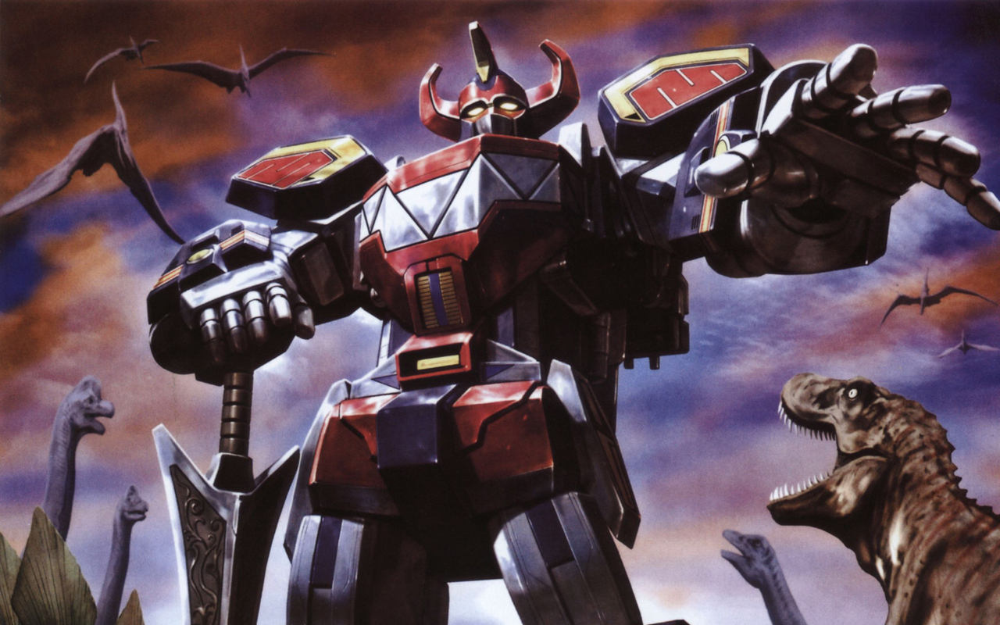

A site builders Toolbelt
Context, Display Suite, Panels and all that
Who is this guy?
What am I going to talk about?
- The basic anatomy of a website 101
- Out of the box: Blocks, Fields & Templates.
- The Context module.
- The Display Suite module
- The Panels module.
- Bringing it all together
Back to basics
The anatomy of a website
What is a website?
A collection of related or interconnected pages or documents written in HTML typically served from a single web domain.
All kinds of pages
- Detail pages
- Overview pages
- Landing pages
- ...
Instead, think content out!
Types of content
- Blog items
- Basic pages
- Events
- Recipes
- Cars
- Taxonomy tags
- ...
We are talking about self contained concepts or "things"
Can be referred to via an URI
In Drupal speak: these are entities or nodes
Here's an important difference
An 'overview' page describing (a) collection(s) of 'things'
vs.
A 'detail' page describing a single 'thing'
Break down of a single web page
A webpage consists of a set of components
Recurring components
Site title (logo), doormat, primary navigation,...
Specific components
Content specific: fields (title, body, timestamp,...)
Context specific: related news, see also, etc.
One off's: call to actions (typically: homepage)
The layout of a page
The arrangement of the different components in a specific structure in order to convey meaning in a sensical way.
The structure of a layout is determined by:
- The purpose of the page
- The context in which a page is viewed
Why you need this stuff
You should have an idea of what you are building, before you start building it.

Information Architecture (IA)
The art and science of organizing and labelling websites, intranets, online communities and software to support usability and findability
Out of the box
Taming the rendition of a site with core modules

Drupal Blocks
- A naive implementation of components
- An base module of Drupal core
- First tool beginners learn to master
Demo
Drawbacks
- Not flexible
- Hard to maintain
- Unwieldable UI
- Limit display logic
Not a valable solution for complex layout systems
Entity displays
- Control how an entity is displayed
- Granularity: field level
- Also a base part of core
Demo
Drawbacks
- No control over view mode layout
- Create extra view modes?
- Control the HTML output of fields?
Again, limited flexibility
Templates
Override the default HTML output in your own custom (sub)theme.
If you want to add/change CSS classes or alter the layout or clean out the HTML output
Theme of Doom
Drawbacks
- Very inflexible
- Hard to mantain afterwards
- Risk of leaking business logic in templates
Bring your toolset to the space age
The Context module
Manage contextual conditions/reactions for portions of your site
Most common case: blocks and their ilk
Demo
Pro's and cons
Advantages
- More flexible then blocks
- Ease of use
- Quite maintainable
Drawbacks
- Not flexible enough
- Risk of becoming complex
- Performance hog
The Display Suite module
Manage the display of all your entities
Extends Field UI
Do away with complex template systems
Demo
Pro's and cons
Advantages
- Maximize flexibility
- Repeatable
- Very maintainable
Drawbacks
- Shoot yourself in the foot
The Panels module
Manage the layout of the content region
Or the entire page (Panels Everywhere)
Demo
Pro's and cons
Advantages
- Maximize flexibility
- Repeatable
- Very maintainable
Drawbacks
- Complex interface
- Shoot yourself in the foot
Bringing it all together
When should I use...
Context
Recurring regions such as header and footer
Low complexity architecture
Display Suite
Control the HTML rendering of entities
Micro level
Panels
To control the HTML rendering of the content region
... or the entire page even.
Macro level
Megazord
(Courtesy Campbell Vertesi)
Plan or perish
- Plan your site architecture up front
- Update your plan as you go
- Communication is key